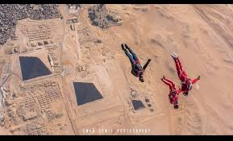

Skydiving is parachuting from an airplane for fun. ... Skydiving can be an exciting sport. Skydiving includes free falling (usually from an aeroplane) through the air prior to opening a parachute. Typically skydives are carried out from around 4,000m (or 12,500ft) offering 40 to 50 seconds of freefall time
there is another type of skydiving and its called static line jump.
A static line is a fixed cord attached to a large, stable object. It is used to open parachutes automatically for paratroopers and novice parachutists.

the jumper drags the parachute behind him, causing the upward-rushing wind to force open and inflate the canopy. The canopy should inflate and begin supporting the jumper within 4 seconds. In the unlikely event of a malfunction, students are taught how to cut away the main canopy and deploy the reserve chute. The aim of static line progression is to train students to maintain the correct, stable body position upon exiting the aircraft, and to teach how to deploy the canopy via the pilot chute mechanism.